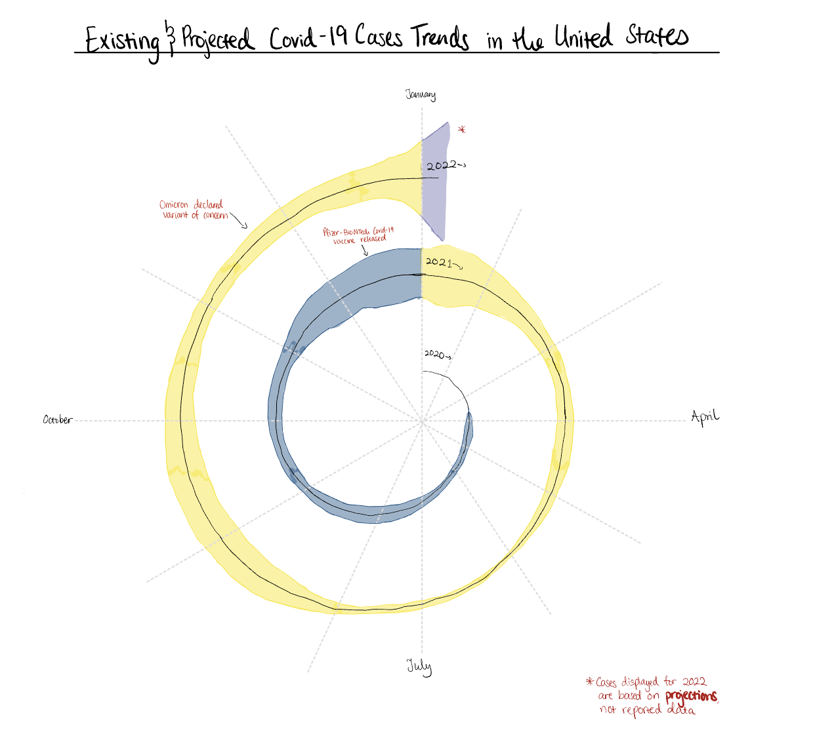
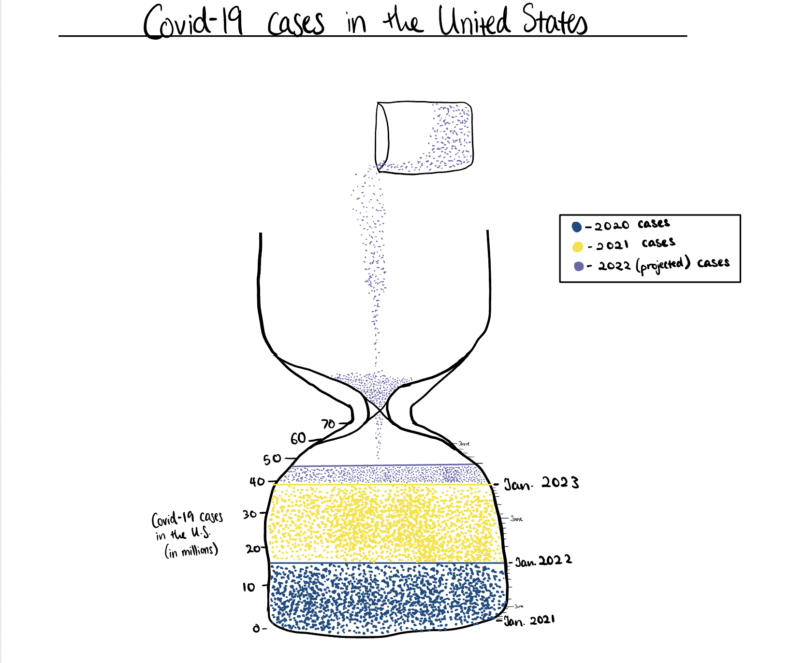

Reading & Critique

Insights about the data/visualization:
- The data is showing that in early 2020, there were very few reported cases of COVID-19, with January-March 2020 having 0 cases. But as the year progressed, the number of cases increased significantly, depicting the initial rapid spread of the virus.
- From this visualisation, we see that cases tend to peak around November to January, which might be due to seasonal factors like colder weather, increased travel, and indoor gatherings. The accompanying article mentions that reporting of cases is often delayed during mid-December till early January and the Omicron variant wave was expected to differ from other variants, so the projections for January 2022 have a significant amount of uncertainty to them.
- Cases seem to rapidly decline during the warmer months of May-July, and rapidly increase again in the fall. As a college student, I wonder how much of this pattern is due to students being out of school during the summer and returning - with whatever illnesses they might have picked up - in the fall.
Design Critique:
I think this visualisation is effective at showing the overall trend of COVID-19 cases over the given time frame, but it could be improved in a few ways. The spiral format was a strong visual choice, leveraging the cyclical nature of time to show the seasonal patterns in the data. Furthermore, the choice to label just the months at the cardinal locations (i.e. January, April, July, October) was a good one to avoid cluttering the visualisation and utilizing clock imagery to further reinforce the sensation of time passing.
Also, after being introduced to "cones of uncertainty" from the accompanying article, I appreciate the visualisation's use of a shaded area that is often used in plots representing uncertainty, as it could remind viewers that the projections for January 2022 are not set in stone and should not be taken as a precise prediction.
Although it is difficult to get exact case numbers from the visualisation, viewers are able to easily interpret the general trends and patterns in the data, which is probably more important for this type of data when presenting to a general audience.
Additionally, there is no explicit label for the date but I think the use of the spiral format and the placement of the months at the cardinal locations saves this from being an issue, as it makes it clear that the data is being plotted over time.
All this being said, there are some areas that could be greatly improved. I think the visualisation could benefit from a centralised, clear title that explicitly states what the data is showing. The current title is off to one side which makes it seem like it is not of great importance. Also, there is no mention of the data for January 2022 and possibly late December 2021 being projections, which could lead to viewers assuming the data is more certain than it actually is. I think the visualisation could be improved by adding a clear label or annotation to indicate that the data for January 2022 is a projection and to explain the uncertainty associated with it.
Additionally, choosing a different colour to represent each year in the spiral could have helped to make the trends for each year easier to distinguish.
Finally, I think the visualisation could greatly benefit from annotations detailing significant events that may have influenced the trends being displayed; since the exact numbers are hard to read from the visual, ease of interpretation of general trends is key, and providing context for the trends would help viewers understand the data more deeply. Furthemore, adding annotations could create a sense of a timeline which works well with the current design choices. Cluttering is a concern to watch for, but I think a few annotations would not increase the visualisation's clutter since the visualisation is already quite sparse.
Visualization Sketches
(Sorry, my first two sketches were not with pen and paper because I didn't realise they were supposed to be, but I fixed it for my third sketch)

Design Rationale for Sketch 1:
- With this sketch, I aimed to imrpove the clarity and readability of the original visualisation by adding a clear title, annotations for significant events that may have affected the trends of cases, and distinct colours for the different years. My choice of colours was based on Pantone's colour of the year, as I wanted to make sure I didn't use any 3 colours that would project any preconceived notions on the visual.
- I think the visualisation is a little easier to interperet because I took away the legend that was showing how to interpret the width of the shading and how it corresponds to the number of cases. While there is value in providing viewers with the actual numbers, there doesn't seem to be an easily understandable way to do that with this visual format. Now, the visual is more focused on just showing the trends and relative changes over time which is what was most interpretable from the original visualisation anyways.
- Although I like the redesign, this visualisation still doesn't do a good job of communicating the actula case numbers to viewers so I would like to explore other visual formats that might be more effective in conveying that information. Additionally, I would like to explore other visual formats that also evoke such a strong sense of the passage of time, as this strong imagery is something I found very compelling in the original visualisation.

Design Rationale for Sketch 2:
- My main goal for this sketch was to explore whether I could propose a different visual format that heavily leans into time imagery while still conveying the trends in COVID-19 cases in the United States over the given time period. Again, I used the Pantone colours of the year for my colour scheme to maintain neutrality for the different years (i.e. to avoid painting one year as "worse" than another due to using a colour with negative connotations, like red).
- I think the axes, axis label, and overall layout of this sketch is more intuitive and easier to interpret than the original visualisation. In particular, I think the inclusion of the fact that the 2023 values are projected in the legend offers more transparency to viewers from the moment they begin to interact with the visual. However, I think this visual is much less effective than the original visualisation in terms of illustrating the trends of case numbers within the years; this visual focuses more on the total case numbers of each year rather than the relative changes over time. I attempted to still give viewers a sense of the within-year trends by adding gradations to the date axis to represent individual months, but this was not very effective as your attention is drawn more to the January labels than the smaller gradations in between. Additionally, the curved shape of the bottom half of the hourglass makes it difficult to make fair comparisons as we approach the top since the width of the container changes. I believe the illustration of trends in case numbers is the most valuable part of the original visualisation, so this sketch feels like it falls short of achieving that important goal even though it is effective in other ways.
- I appreciate the exploration of alternative visual formats that evoke time imagery, but I think this sketch's effectiveness at evoking a strong sense of time passing is not a valuable enough tradeoff for its lack of clarity in showing trends in case numbers within the years as clearly as the original visualisation. With my next sketch, I would like to focus more on designing for what is most important: the within-year trends and uncertainty of projections, not the eye-catching, time imagery design elements.
Design Rationale for Sketch 3:
- RATIONALE 1
- RATIONALE 2
- RATIONALE 3
Final Visualization Design
Final Writeup
DESCRIBE YOUR RATIONALE TO JUSTIFY THE DECISIONS FOR YOUR FINAL DESIGN. WHAT ARE YOU TRYING TO CONVEY, AND HOW DOES YOUR DESIGN FACILITATE THIS?
REFLECT ON HOW YOUR FINAL DESIGN DOES OR DOES NOT ADDRESS YOUR ORIGINAL CRITIQUE. WHAT TENSIONS OR TRADEOFFS DID YOU ENCOUNTER? WHAT DID NOT WORK OUT AS ANTICIPATED?